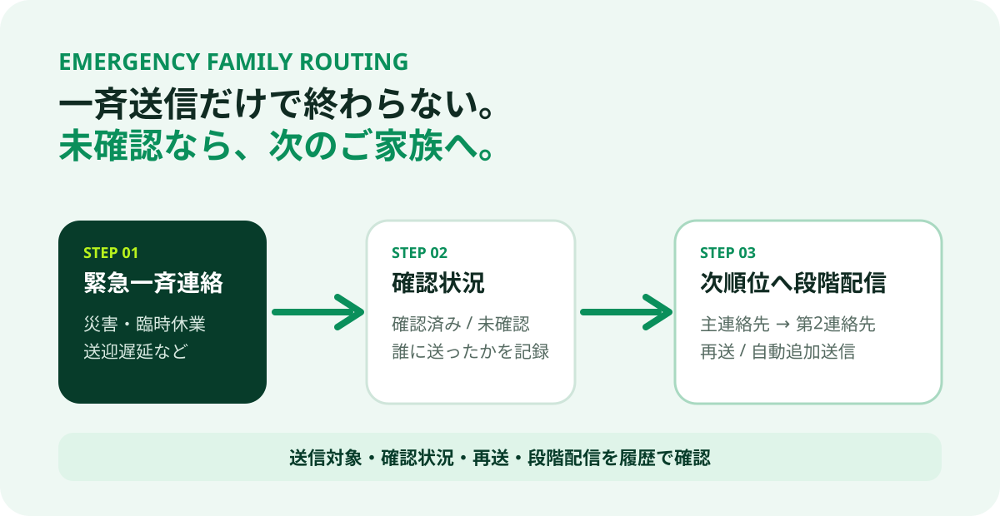

複数家族・連絡優先順位
利用者ごとに主連絡先、第2連絡先などを登録し、通常連絡・緊急連絡の対象を整理します。
CARE FACILITY × EMERGENCY CONTACT
災害、臨時休業、送迎遅延などでは、送ったことより「誰に届き、確認され、次に誰へ連絡するか」が重要です。
POINT 01
利用者ごとに主連絡先、第2連絡先などを登録し、通常連絡・緊急連絡の対象を整理します。
災害、臨時休業、送迎遅延などを、全登録家族または対象利用者の家族へ送信します。
誰に送ったか、確認済みか、再送・段階配信がどこまで進んだかを履歴で確認します。
POINT 02
重要連絡を見落としている家族へ、確認状況を見ながら再送できます。
主連絡先が未確認の場合、設定した優先順位に沿って次のご家族へ連絡できます。
設定時間を超えて未確認の場合、最大順位まで次順位家族へ自動で追加送信する運用に対応します。
DISASTER SCENARIO
VISUAL GUIDE

DPRO POSITION
介護保険請求、正式な介護記録、LIFE、法定帳票の代替ではありません。DPRO DAYCAREは、家族LINE、利用者・家族台帳、利用予定、送迎確認、緊急一斉連絡などを補完します。
FAQ
ありません。介護請求・正式記録・LIFEなどは既存ソフトを継続し、DPROは家族連絡や現場運用を補完します。
未確認者への再送、優先順位に沿った次順位家族への追加送信に対応します。自動段階配信を有効にした場合は、設定時間を超えて未確認の際に最大順位まで自動で追加送信できます。
はい。DPRO DAYCAREの商品ページと公開デモから実際の管理画面を確認できます。